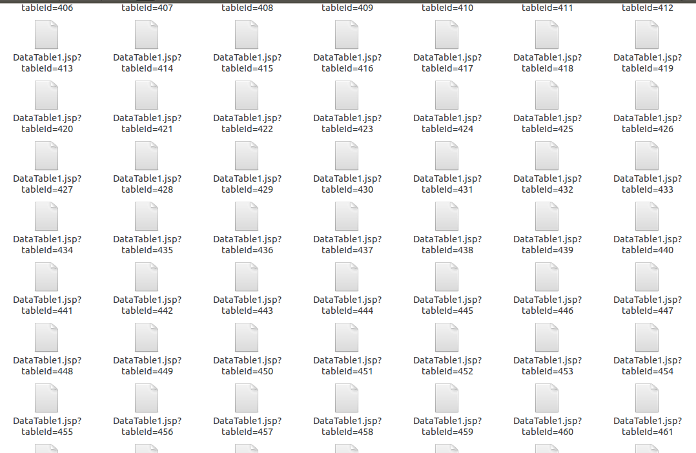
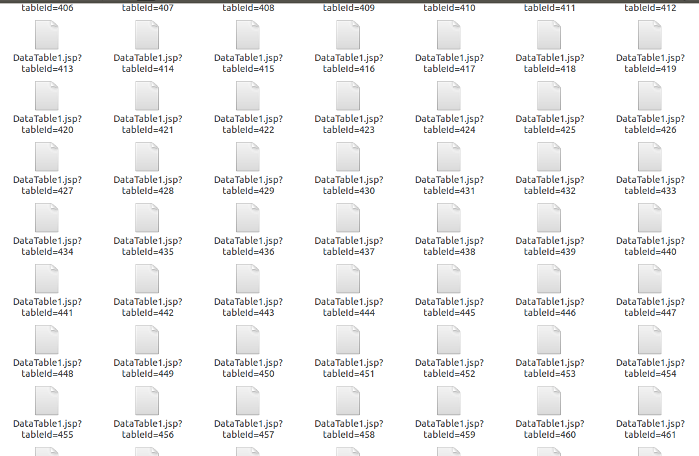

找到最适合自己的抓取方式，不论是Python, wget,curl, NodeJs, R ，随便你，开心就好(抓取的数据要有效率)
起源
事情的起源是，someday，我发现了学校的一个网站有信息泄露了,背单词苦逼到几点我，好想日站。然而，我怎么能做这种有辱xx的事呢，好了借口找不到了，切入正文。
找到url, 构造类似与 xxx.edu.cn/xxx.jsp?tableid=yyy 由于我当时并不知道，到底1-yyyy之间有多少有用的，所以就直接把1-yyyy之间全抓了，而且傻逼的最开始并未考虑其中有的表页是空白。当时就用了几行代码,用的自带的wget，写了个循环了事。
#!/bin/bash
for i in {1..800}
do
echo http://xxx.xxx.edu.cn:8081/KingoKJ/taglib/DataTable1.jsp?tableId=$i >>myurl
done
time cat myurl|while read line;do curl -l $line -m 5 --connect-timeout 5 -o /dev/null -s -w "$line "%{http_code}" "%{size_download}"\n" >>kb_TEST ; done
这一次测试出了有哪些空白页，没办法数据不是可用的，输出的都是这样的

从图上就可以看出最小的是1026字节，于是乎稍加修改可以得到这样的结果，url全是验证过的具有内容的。

然后就可以简单的抓下来网页，顺便截个图。 截图是用的phantomjs ,当时怕要是自己分析不好，先拿个一眼能看的数据备份一份下来。 在zsh中安装Phantom之后可能无法直接使用，要切换回bash才行
1.截图的js代码，参考官网，不过当时测试时，怕截不完整，查了下资料
var page = new WebPage(),
address, output, size;
if (phantom.args.length < 2 || phantom.args.length > 3) {
console.log('Usage: rasterize.js URL filename');
phantom.exit();
} else {
address = phantom.args[0];
output = phantom.args[1];
page.viewportSize = { width: 500, height:1000}
//如何滚动到页面底部，你可以设置显示器很大很大就行了
page.open(address, function (status) {
if (status !== 'success') {
console.log('Unable to load the address!');
} else {
window.setTimeout(function () {
page.render(output);
phantom.exit();
}, 200);
}
});
}
然后就是配合一个极为简单的shell脚本，循环一下，wget到全部。
cat usefulurl | while read line
do
echo $line
wget $line > $line
phantomjs jietu.js $line $line.png
done
 其他的则是正常的

其他的则是正常的

其实呢，针对我这个地方的抓取，用R是更加的方便的，通过rvest包，可以很方便的将获取所有表格。虽然我并没有采取使用R的方法，一开始写的python脚本，也是循环get数据，但是并不如wget更好使。本来打算一次性放在这篇里面，但是有点累了，决定把另一半放到下一篇再写。另外抓这个的时候还是很兴奋的，一连搞了一天多。还有我的好朋友，谢谢你。